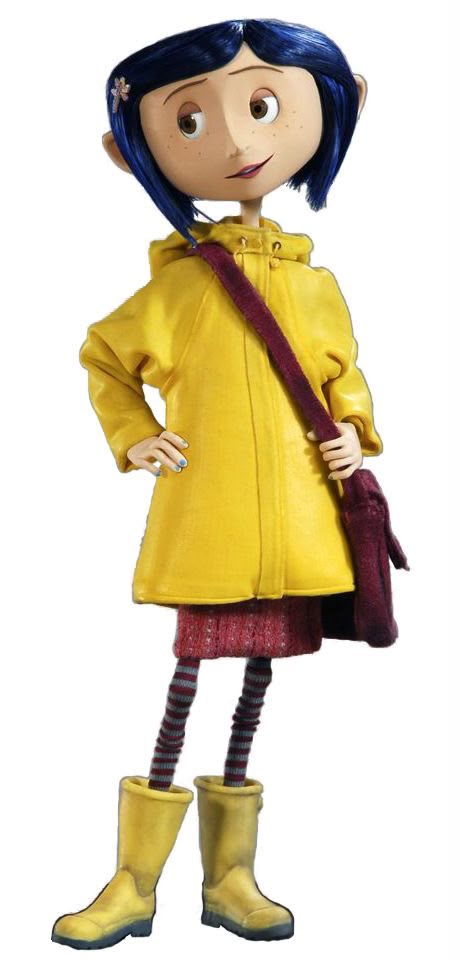
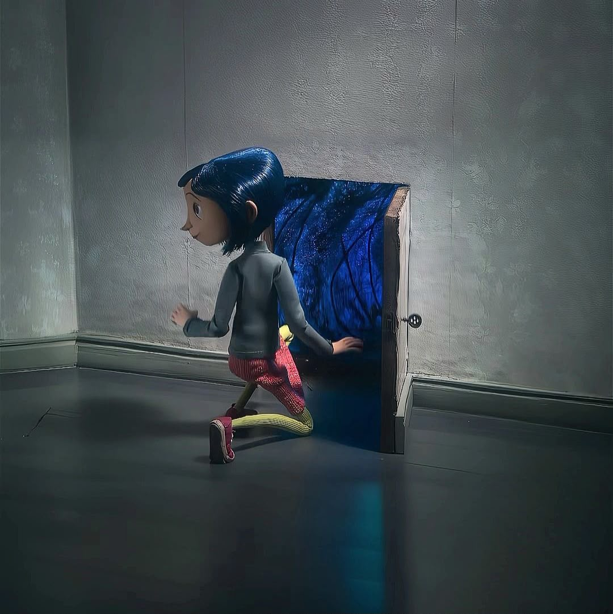
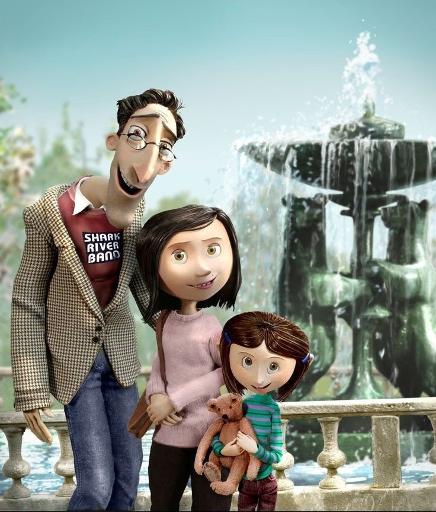
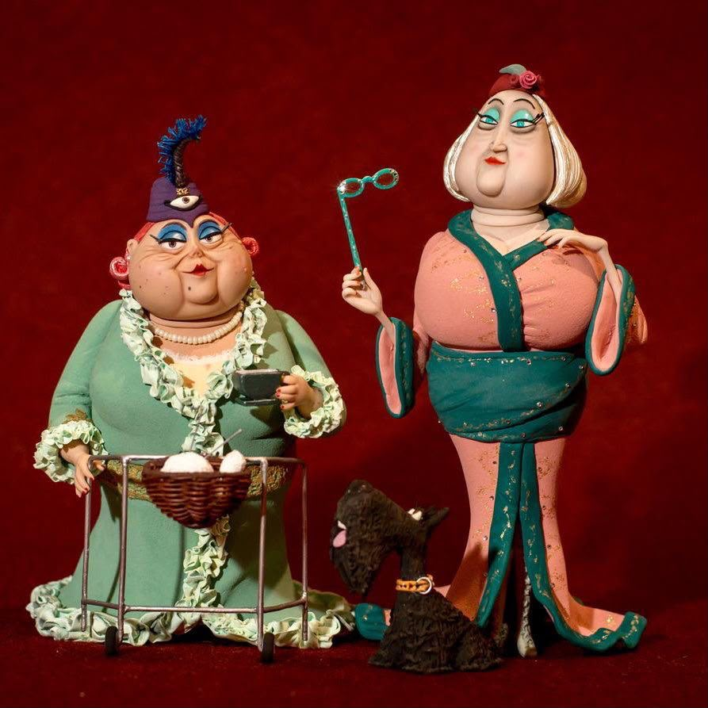

Coraline Jones
A curious, brave 11-year-old who would rather explore than sit still — which is exactly how she finds the door.
Coraline Jones has just moved into the Pink Palace Apartments with her parents, who are too busy to pay her much attention. Bored and curious, she explores the old house and finds a small door bricked up behind the wallpaper.
One night the door opens onto a tunnel that leads to another version of her life — brighter, kinder, and not quite right. Everyone there has buttons for eyes, and the Other Mother is not willing to let Coraline leave.


A curious, brave 11-year-old who would rather explore than sit still — which is exactly how she finds the door.

The talkative neighbor boy who can't stop apologizing — and ends up being Coraline's only real-world ally.

Warm and attentive at first — until Coraline realizes she wants to keep her forever, button eyes and all.

A sarcastic stray who can talk in the Other World and walks between both worlds whenever he pleases.

Coraline's real parents — loving, but buried in deadlines and too distracted to notice she's gone missing.

The upstairs neighbor training an acrobatic mouse circus, always sure it will be ready "soon."

Retired actresses downstairs who read Coraline's fortune in tea leaves and know more than they let on.

Earlier victims of the Other Mother, trapped behind the mirror, warning Coraline not to make their mistake.